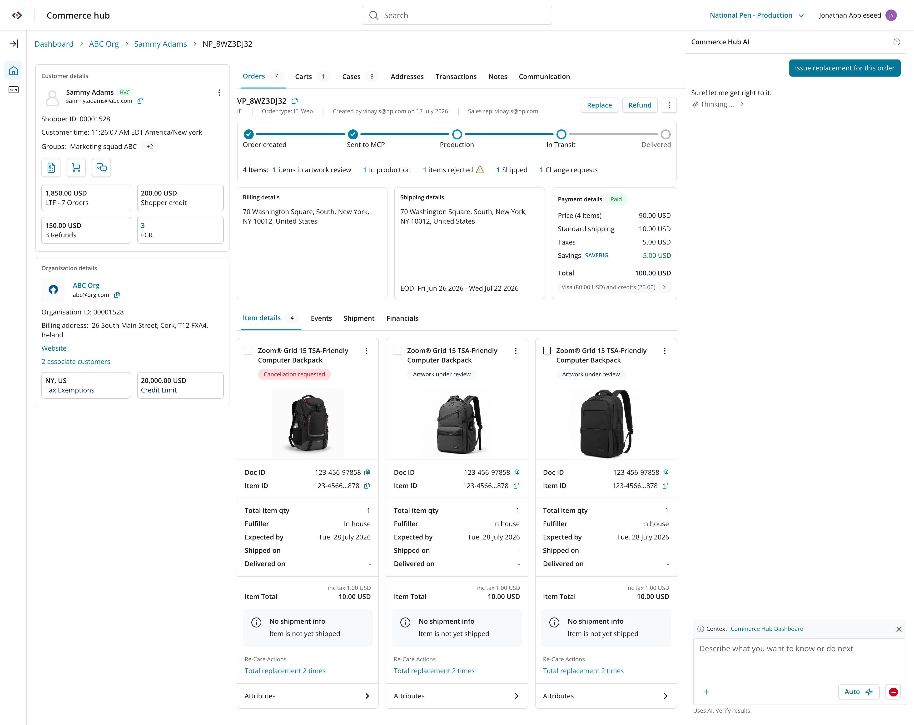
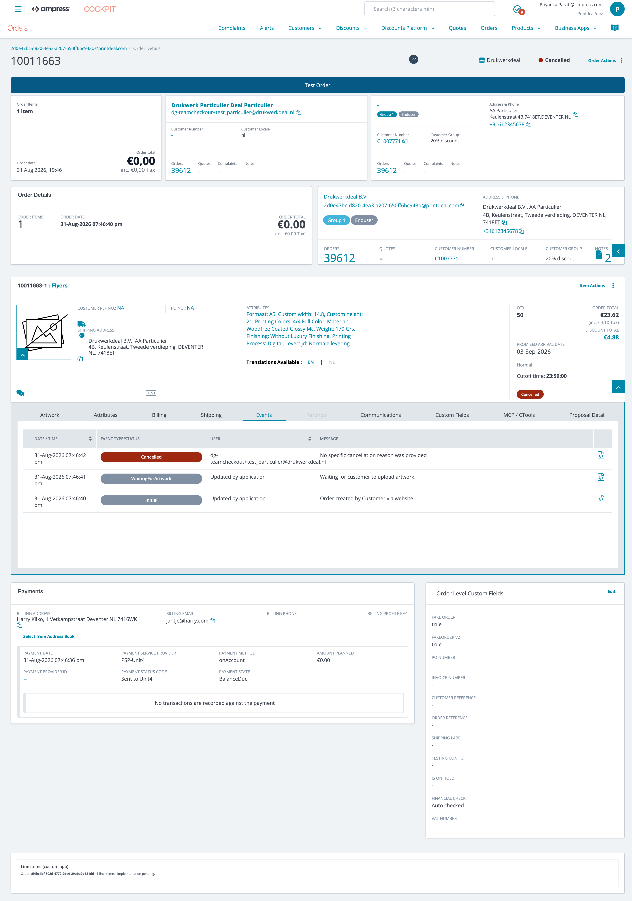
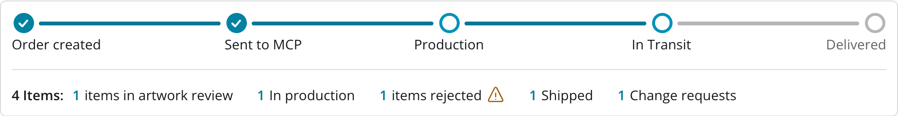
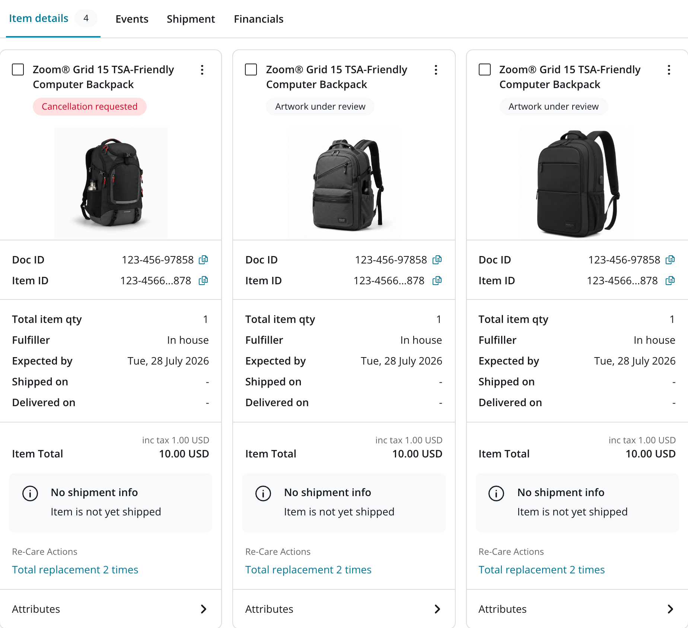
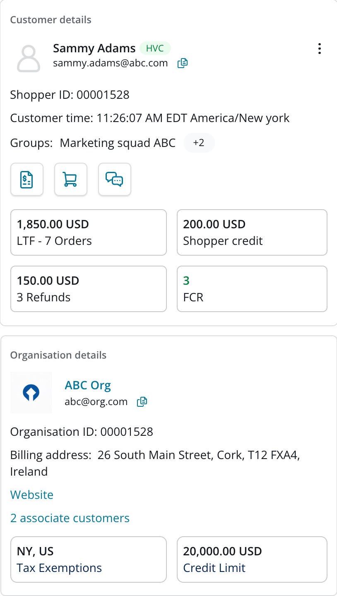
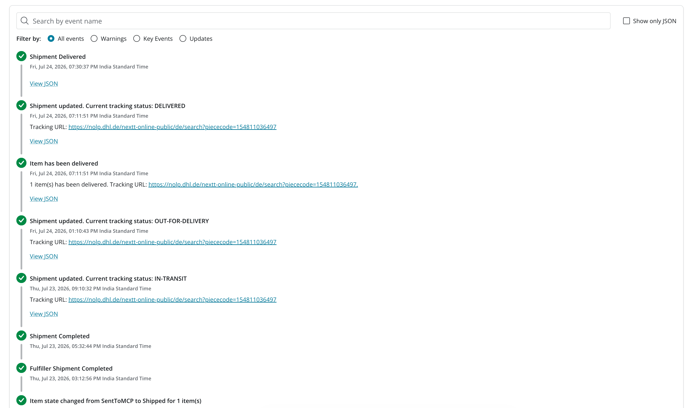
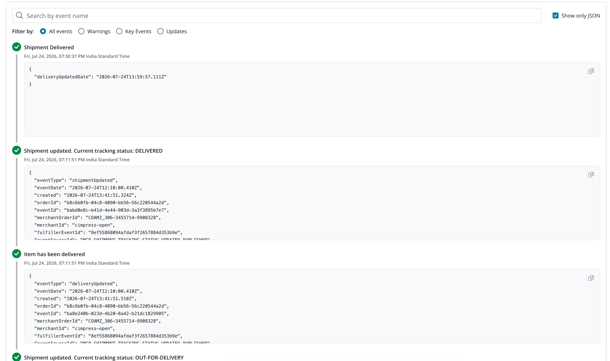

Where is my order?
How Order Details went from a screen people dreaded opening to the one place customer care, support, and engineering all trust.


Before AfterOrder Details screen before/after: Cimpress Cockpit → Commerce Hub. Drag to compare.
Impact first
decrease in Average Handle Time
Across order-related customer-care queries, in the first seven months after launch.
increase in CSAT
From agents actually using the redesigned Order Details day to day.
to answer WISMO
The most common question customer care hears, answered almost instantly.
Faster technical investigation
Support and engineering could dig into an order right there, no more hopping between tools.
The challenge
"Where is my order?" drove roughly half of all customer-care inquiries, yet answering it was unnecessarily hard.
Agents had to jump across three platforms, piece together scattered information, and navigate endless scrolling, especially for complex multi-item orders.
The challenge: one screen had to work for two very different needs, giving care agents quick answers while giving support, engineering, and production teams the depth to investigate.
Order Details had become a place that stored information. The opportunity was to make it a place where you could immediately understand what was happening with an order.
Reframing the experience
Three ideas ended up driving most of the decisions from here:
1. Make the order journey immediately understandable
The first thing we added was an Order Timeline, a plain, chronological view of the events that actually mattered in that order's life.
Instead of reconstructing a story across three systems, an agent could just look at the timeline and answer the customer on the spot.

2. Reduce scrolling and improve discovery
The old item cards were laid out horizontally, which worked fine for one item and fell apart for ten.
We switched them to a vertical layout so more items fit in view at once, cleaned up the artwork and previews, and gave each kind of information a clear, findable home instead of one long page:
Related information lived together, so agents weren't hunting across the page for things that belonged in the same place.

3. Bring order and customer context together
We added a dedicated Pricing card with a real financial breakdown, so refunds, credits and payment questions didn't need a separate detour.
And we pulled customer metadata straight into the page (tier, history, the details that inform what to do next) instead of making agents open yet another system for it.
Now the order and the customer sat side by side, and decisions could actually be made in one place.

Designing for more than customer care
The deeper we got into this, the clearer it became that customer care wasn't the only audience: support, engineering and production teams lived in this same screen, just for very different reasons.
Every order throws off a lot of lifecycle events, and just listing them out wasn't going to help anyone. We needed them grouped in a way that made sense at a glance, but still held up to real technical digging.
So we sorted events into categories:
That made the event history readable for non-technical users without dumbing it down for the people who actually needed the depth.
We also exposed the raw order-level and event-level JSON, for anyone who needed to go further than the categories could take them.
Which meant support and engineering could actually start answering questions like:
Why has an order been stuck in a particular state?
Has it exceeded its expected SLA?
Why did an action return a 404?
What data was associated with the event when the problem occurred?
Investigation could start right there in Order Details, instead of forcing people to move between tools before they'd even gotten anywhere.


Designing across domains and at scale
Honestly, the interface was never the hard part. The hard part was that this one screen had to hold up across multiple businesses, order lifecycles and technical systems, for stakeholder groups who didn't agree on what mattered.
Business wanted resolution. Support wanted diagnosis. Engineering wanted the underlying data. Getting everyone aligned on one shared experience, instead of quietly building three narrower ones, took as much conversation as it did design work.
So we leaned into an information architecture and interaction model flexible enough to absorb new events, new APIs and new business rules, because we knew this wouldn't be the last time the platform changed under us.
We weren't designing for one order lifecycle. We were building something that had to keep working as the platform kept changing.
The outcome
What started as a question about a single order (where is it?) turned into a much bigger systems-design problem.
Order Details went from a fragmented information screen to something customer care, support and engineering all rely on for their own version of the same job: understanding an order, resolving it, or investigating it.
One order, one source of truth, and finally, a screen every team could actually trust.